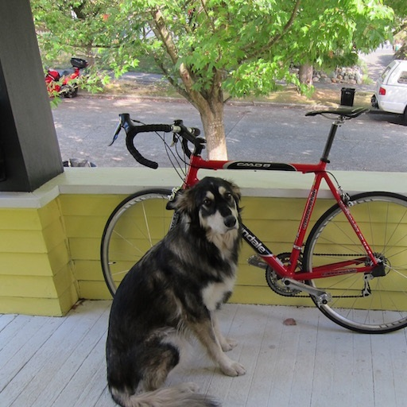
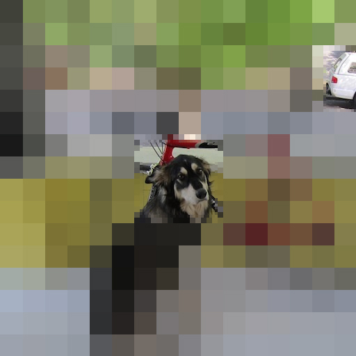
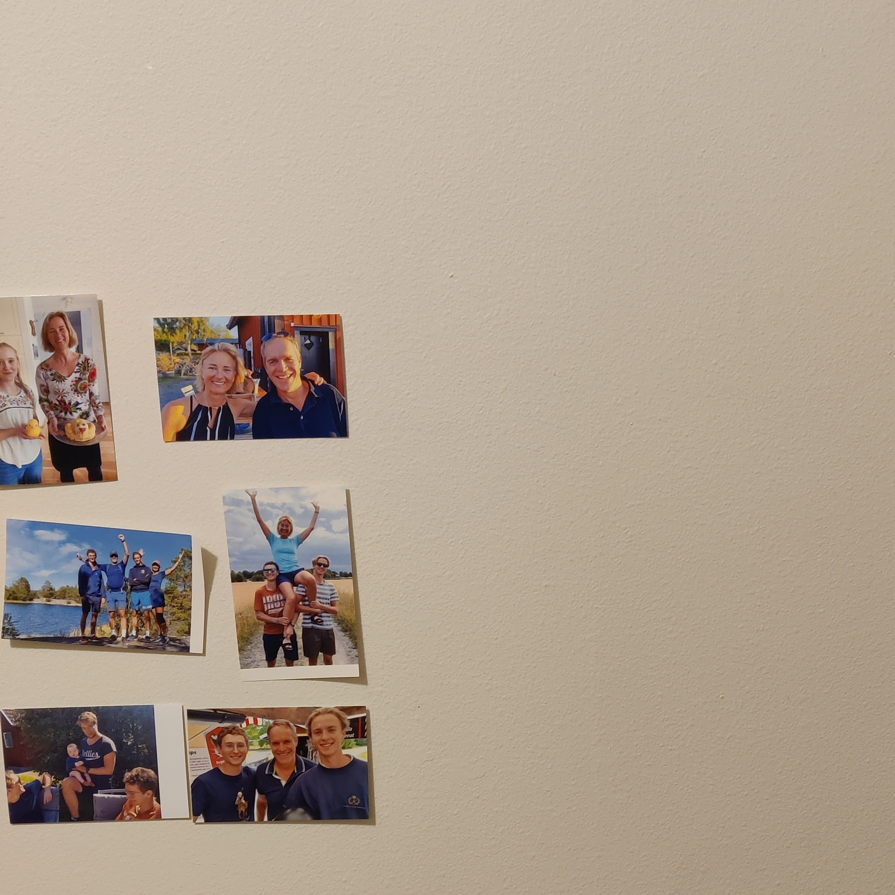
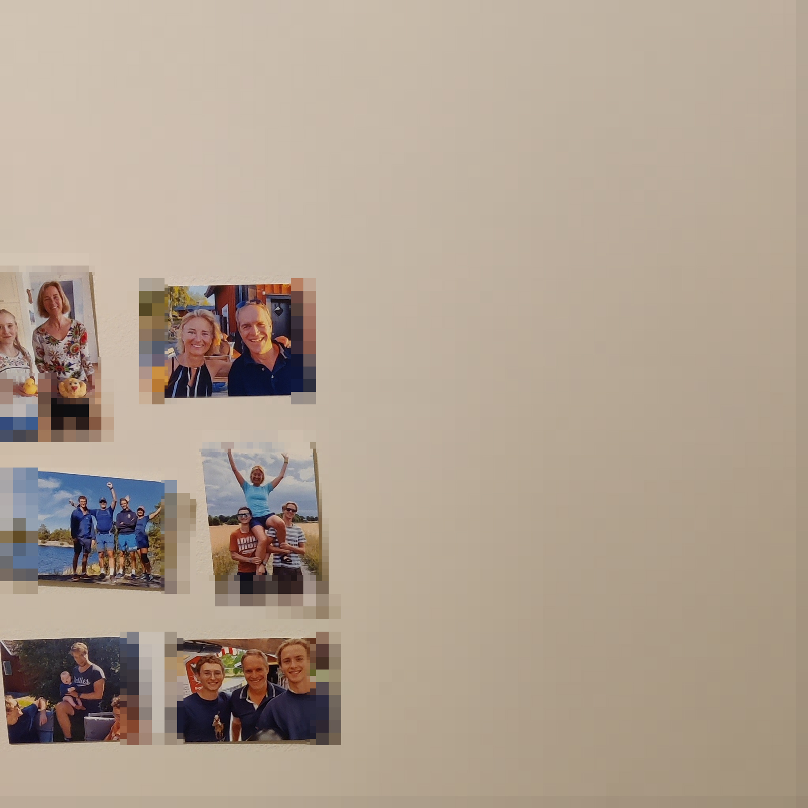

Quad image
Using quadtrees to compress image size for varying levels of quality across different regions of image. The algorithm makes more sense in a video setting than stillframe images, but nontheless for illustration purposes images serve to illustrate its functionality. What promoted this approach is how whenever we look at something our eyes move to put focus on one part of our vision and the rest ends up in our peripheral. So given an image and a region of focus we could save the data in a format where the subjective loss of quality is lower than the loss in data size.
The code for the quad image datastructure and related algorithms
YoutubeVideo explaining datastructure and algorithm.
Sample images
The following 512x512 photo shows a dog, with the rear of truck on a street behind it.
Pixel groups as large as (2^5)x(2^5) grouped together, with two areas of focus (manually added).
2048x2048 photo of a wall with some pictures on it.
Pixel groups as large as (2^5)x(2^5) grouped together, with 9 areas of focus (manually added).
